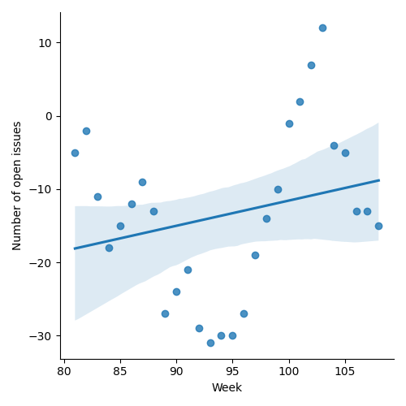
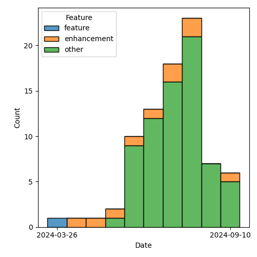

QT4 CG Meeting 093 Minutes 2024-10-08
Meeting index / QT4CG.org / Dashboard / GH Issues / GH Pull Requests
Table of Contents
- Draft Minutes
- Summary of new and continuing actions
[0/8] - 1. Administrivia
- 2. Technical agenda
- 2.1. PR #1355: 1351 Add "declare record" in XQuery
- 2.2. PR #1482: 1468 Revise the xsl:array instruction
- 2.3. PR #1481: 1448 Component extraction on gregorian types
- 2.4. PR #1480: 1450 Disallow reserved names in element/attribute constructors
- 2.5. PR #1477: 1475 Stylesheet change to mark optional fields with '?'
- 2.6. PR #1476: 1474 xml-to-json: ensure numbers are JSON conformant
- 3. Any other business
- 4. Adjourned
Draft Minutes
Summary of new and continuing actions [0/8]
[ ]QT4CG-080-07: NW to update the build instructions in the README[ ]QT4CG-082-02: DN to work with MK to come to agreement on the fn:ranks proposal[ ]QT4CG-088-01: NW to consider how best to add a dedication to MSM.[ ]QT4CG-088-04: [Someone] needs to update the processing model diagram needs vis-a-vis the static typing feature[ ]QT4CG-089-01: CG to draft a PR that attempts to resolve the operators described in #755 to a smaller number of orthogonal choices.[ ]QT4CG-093-01: NW to fix the bug in the burndown charts[ ]QT4CG-093-02: NW to resolve the F&O search box one way or the other[ ]QT4CG-093-03: NW to make dashboard links redirect to the issue/PR when they’re no longer on the dashboard
1. Administrivia
1.1. Roll call [12/12]
[X]David J Birnbaum (DB)[X]Reece Dunn (RD)[X]Sasha Firsov (SF) [-:35][X]Christian Grün (CG)[X]Joel Kalvesmaki (JK) [:10-][X]Michael Kay (MK)[X]Juri Leino (JLO)[X]John Lumley (JWL)[X]Dimitre Novatchev (DN)[X]Wendell Piez (WP)[X]Ed Porter (EP)[X]Norm Tovey-Walsh (NW). Scribe. Chair.
1.2. Accept the agenda
Proposal: Accept the agenda.
Accepted.
1.2.1. Status so far…
These charts have been adjusted so they reflect the preceding six months of work.

Figure 1: “Burn down” chart on open issues

Figure 2: Open issues by specification

Figure 3: Open issues by type
1.3. Approve minutes of the previous meeting
Proposal: Accept the minutes of the previous meeting.
Accepted.
1.4. Next meeting
This next meeting is planned for 15 October. Any regrets?
None heard.
Note: The QT4CG operates on European civil time. In Europe and the United Kingdom, summer time ends on 27 October. In the United States, summer time ends on 3 November. That means the meeting of 29 October will be one hour later in the United States.
1.5. Review of open action items [1/6]
(Items marked [X] are believed to have been closed via email before this agenda was posted.)
[ ]QT4CG-080-07: NW to update the build instructions in the README[ ]QT4CG-082-02: DN to work with MK to come to agreement on the fn:ranks proposal[ ]QT4CG-088-01: NW to consider how best to add a dedication to MSM.[ ]QT4CG-088-04: [Someone] needs to update the processing model diagram needs vis-a-vis the static typing feature[ ]QT4CG-089-01: CG to draft a PR that attempts to resolve the operators described in #755 to a smaller number of orthogonal choices.[X]QT4CG-091-01: MK to make sure there’s an editorial note about parameter renaming.
1.6. Review of open pull requests and issues
1.6.1. Blocked
1.6.2. Close without action
It has been proposed that the following issues be closed without action. If you think discussion is necessary, please say so.
- Issue #1305: Almost all functions in FO that must process multiple string items, can have as a parameter only a single collation
- DN: I think the problem is clear, but I don’t feel there’s any understanding or agreement on the thread. We need to agree that there’s a problem and then find a solution. I wouldn’t publish the documents without solving the problem.
- NW: It would be good to have a plan to make some progress.
- DN: I have proposed two solutions, a special case and a more general solution.
- When we have a comparison that involves more than a sequence of strings, at the present, our signatures only allow a single collation. But an article written by several people may require different collations for different names.
- Just providing a single collation won’t solve the issue. I think this is a real problem in practice.
- CG: I haven’t comment on the issue, but I would need to have a full PR to see what the problem is. I haven’t encountered this problem and I haven’t seen any examples in this issue that demonstrates how an existing problem can’t be solved.
- MK: I don’t think we should spend a lot of time today discussing the issue. I
think we should concentrate on process. There are 130 open issues, some with
extensive discussion that hasn’t lead to consensus. Sometimes that there’s a
problem, sometimes what the solution is.
- We have focus on finishing things, not starting them.
- JWL: Given that this isn’t a very common thing, is it something that could be sorted by complex comparitor functions? That you could solve this problem with a higher order function if you needed to.
- DN: I think this is a problem everywhere deep equal is used. If we don’t solve this, we need to note that it may not produce the right result.
- RD: In order for this proposal to work, two things need to be resolved.
- How implementations on things like SQL database backends or Java and such will work in terms of working with multiple collations
- And how things like things like comparisons and such will work when you have incompatible locales.
- NW: Okay. I’m inclined to leave this open for another week. If this is important to you, try to advance it. If it doesn’t advance, we’ll revisit closing it next week.
1.6.3. Substantive PRs
The following substantive PRs were open when this agenda was prepared.
- PR #1482: 1468 Revise the xsl:array instruction
- PR #1481: 1448 Component extraction on gregorian types
- PR #1480: 1450 Disallow reserved names in element/attribute constructors
- PR #1477: 1475 Stylesheet change to mark optional fields with '?'
- PR #1476: 1474 xml-to-json: ensure numbers are JSON conformant
- PR #1472: 1471 JSON Serialization: Sequences on Top Level
- PR #1470: 689 fn:stack-trace: replace with $err:stack-trace
- PR #1467: Modest editorial corrections to XSLT specs through 2.7
- PR #1454: 1449 Relax rules on multiple xsl:includes
- PR #1442: 1394 Add new default priority rules
- PR #1378: 1375 bugs in pattern syntax
- PR #1355: 1351 Add "declare record" in XQuery
- PR #1227: 150 PR resubmission for fn ranks
2. Technical agenda
2.1. PR #1355: 1351 Add "declare record" in XQuery
See #1355
MK introduces the issue. This is a substantial issue but we have discussed it before. MK reviews the changes in the XQuery spec.
- MK: There is a bunch of noise because of terminology changes, but thhe meat of
the proposal is in 5.20 Named Record Types.
- … Doesn’t remove item type declaration, but supplements it with declare record.
- … (MK talks through several of the examples)
- … Declared records can be recursive where item types don’t allow forward references.
- … You can use functions as entries in records; an area function for a rectangle record type, for example.
- … I’m intending to do something similar for XSLT, but that will be a follow-on action.
- JLO: I’m wondering about the “⨉” in the example
- MK: Yes, that’s a feature we introduced a while ago.
- CG: I really like the proposal, there’s a remaining syntax error in 5.22 but I’ve proposed a solution.
- DN: You mentioned that there are two ways of defining a record type now, but only one allows recursive references. Which one?
- MK: Declare record allows recursion. But the general declare item type doesn’t.
- DN: I want to reiterate that we should provide some standard record types.
Proposal: accept this PR
Accepted.
2.2. PR #1482: 1468 Revise the xsl:array instruction
See #1482
MK introduces the proposal.
- MK: Thanks JK for extensive comments; I’ve taken those on board and updated the PR.
- MK: The bulk of the proposal is in 22.1 array construction which is essentially rewritten.
- … In the previous draft, there was a use expression.
- … In this proposal, you can do it in several different ways.
- … (MK walks through the prose of the PR)
- … The xsl:array-member instruction can be used to construct members.
- … (MK walks through several examples from the PR)
- JWL: Basically, the xsl:array-member is a special tag that’s understood by the array when it’s pulled together: everything in here is one element in the array.
- MK: Yes, it parcels up the values.
- MK: It creates a value record, it can be used outside of xsl:array-member.
- JWL: That’s parallel to the xsl:map-entry
- MK: Yes.
- JWL: Is there a matrix inversion example? Can we have one, please?
- MK: Yes, there’s an example of inverting a nested array.
- DN: My question is, if I can do this in XPath and it’s simpler and shorter, why would I do this?
- MK: The problem is when it comes to calling XSLT form XPath. If you want to use grouping, or
apply-templates, or analyze-string, it’s a lot harder to get back into XPath from there.
- … If you’re converting to JSON, you might have arrays in maps in arrays and that’s the use case.
- DN: I think this could be improved by specifically indicating when to use one approach and when to use another.
- MK: We always have to decide how much tutorial material to add.
Some further discussion of the lack of composability between XPath expressions and XSLT instructions.
- JK: This is a great proposal. I disagree with DN, the reader of this
specification is already aware that there’s overlap and we should try to keep
them in tandem.
- … The example with xsl:apply-templates is realy compelling.
- … In the original issue I raised, MK raised a question about type safety. What’s the issue there?
- MK: There’s a need to find a balance and this proposal changes the balance.
You want it to be flexible and intuitive, but you also want it to scream
loudly when the intuitive approach doesn’t give you the result you want.
- … That’s why this proposal doesn’t allow you to construct heterogenous arrays. My gut feeling is that if you were using a heterogenous sequence, you were probably doing it by mistake.
- JLO: I like this a lot. I think this is very nice and I’m not really an XSLT user. I was only confused by converting a sequence of arrays to an array of sequences. I’d like to know more about why you’d do that.
- MK: I added it because other people thought it was a good idea, not because I did.
- … I think there are some use cases where the members will arrive as arrays. That might be a mistake, but we’ll see.
Proposal: accept this PR
Accepted.
2.3. PR #1481: 1448 Component extraction on gregorian types
See #1481
- MK: This is a quite simple proposal, but I expect some will love it and some will hate it.
- … It fills a longstanding gap around the g* date types.
- … Rather than introducing new functions to support them, I’ve extended the functions for extracting components from date times so that they work from all the “gregorian types”.
- NW: Seems like a good idea to me.
- JWL: This seems like a good idea to me too.
Proposal: accept this PR
Accepted.
2.4. PR #1480: 1450 Disallow reserved names in element/attribute constructors
See #1480
- MK: This is motivated by the syntax ambiguities that we found by introducing
bare-brace map constructors.
- … It doesn’t change them, but it is an enabler that allows us to revisit that.
- … A lot of the ambiguities with bare-brace map constructors had to do with special cases.
- … The bulk of the changes is in 4.12.3.1 Computed Element Constructors.
- JWL: This is a lot easier to read on the non-diffed version
MK switches to the non-diff version.
- MK reviews the proposal in 4.12.3.1 Computed Element Constructors.
- … If you want to use reserved names like div and value, you have to quote them.
- … That’s pretty much it, but the text is restructured a bit.
- CG: Does that mean we can get rid of the rule for standalone expression again?
- MK: I hope so, perhaps JWL can help review the ambigutities again.
- JWL: I’ll do that once this is merged.
- RD: Is it possible to work out a subset of all the possible keywords that could conflict and then ohly do it with them. I think that when the keywords are the names of HTML elements that’s going to be quite common.
- MK: I don’t know, but “div”, for example, that is one that’s umbiguous.
- RD: But it’s unlikely that you’d want a simplified map there.
- MK: A lot of the problem here is that a lot of the things that won’t parse are
things you wouldn’t want to write anyway.
- … It’s unclear if we could isolate the cases, binary operators in particular, and have a shorter list.
- RD: We can always accept this and then refine it later.
- JLO: I’m in the same boat as RD. I expect that “div” occurs in a lot of code. To get rid of this one thing would already help a lot.
- NW: But “div” is squarely in the list of things you can’t have.
- MK: It would be nice to argue that the problem is only when you have curly braces on the right hand side, but that’s not how the parser works.
- JLO: So the fact that div can’t be followed by a curly brace isn’t something we can do?
- MK: It’s very, very mess to make the grammar rules depend on type rules.
- RD: Can we do something similar to what we do with the open element case.
- MK: Which case?
- RD: Where you’ve got something like
if ($a <foo…where that<could be a less than or the start of an element.- … In the current spec, in order for it to be an open element it has to match a more specific grammar rule.
- MK: I’m not sure how you’d do that.
- RD: Something like
div {and then … presumably that would be a string name colon or … I can’t remember if we allow general constructs as the key name.- … I think it’s something we need to discuss separately.
- JWL: I’ve been working on this one with the generated grammars. It’s the computed constructed nodes in XQuery that give the problem. This is where it hits hard. Anything like “div” and “return” in that place as an NCName between the type of the node you want to produce and the thing that could be the sequence constructor or an empty map is the one place this is most problematic.
- WP: As a person who writes mostly XSLT, I’m thinking when I write XQuery I
mostly don’t use an element constructor unless I have to compute the name.
- … I think we should address the XQuery problem head on.
- RD: Am I right in saying this is only an issue for empty maps?
- MK: No, it’s any map constructor.
- RD: Could we limit this restriction to the case where the braces are empty?
Proposal: accept this PR
Accepted.
(The PR was blocked by merge conflicts at the time of publication.)
2.5. PR #1477: 1475 Stylesheet change to mark optional fields with '?'
2.6. PR #1476: 1474 xml-to-json: ensure numbers are JSON conformant
3. Any other business
- WP: Last week I was talking to someone doing an implementation and they remarked how clear the specifications are, so thanks to everyone involved.
None heard.